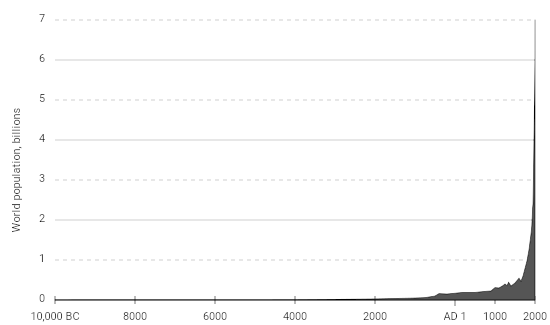
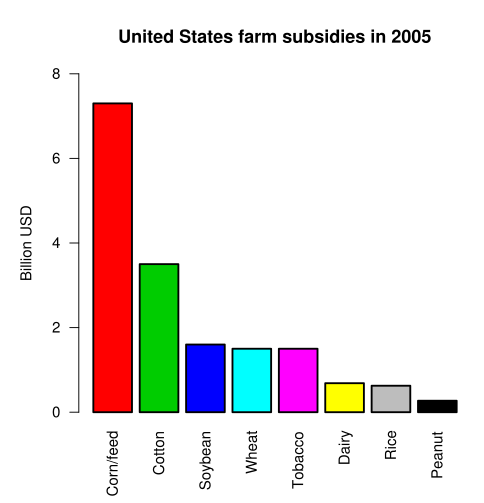
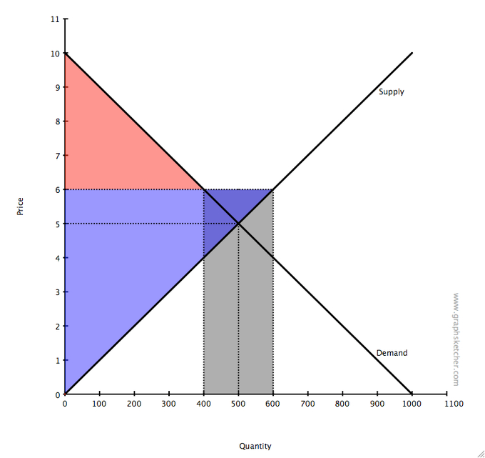
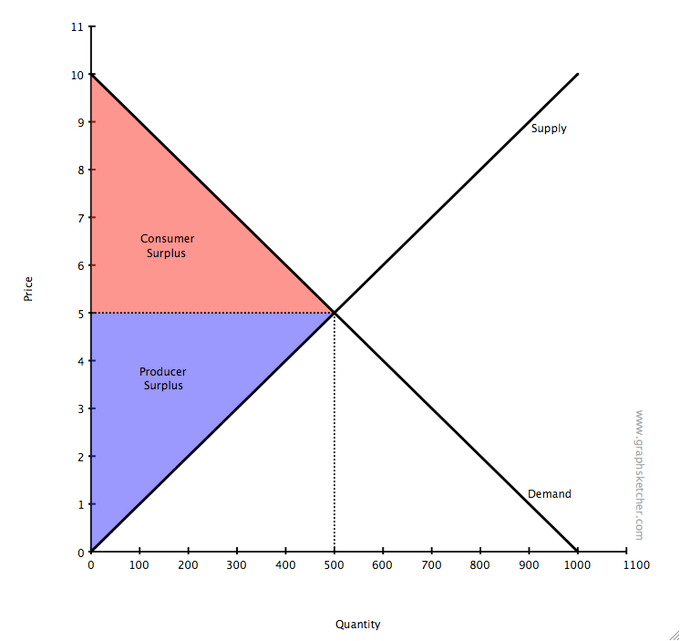
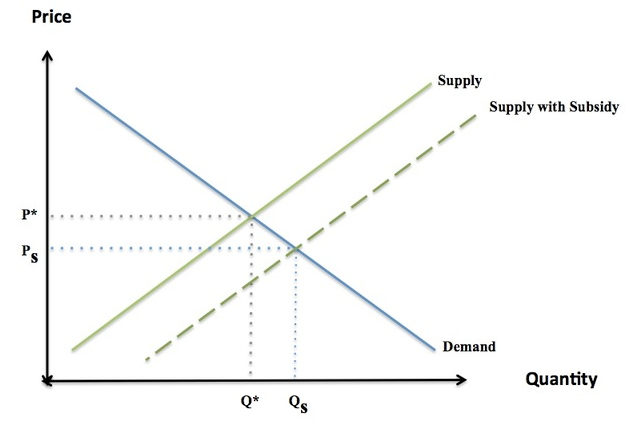
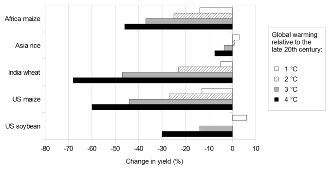
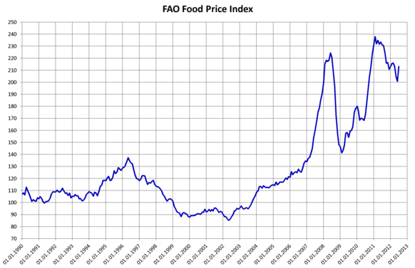

The agricultural market landscape is the economic system that produces, distributes, and consumes agricultural products and services.
Outline the evolution of the agriculture market over time
Agriculture, in many ways, has been the fundamental economic industry throughout history. The production and exchange of food laid the groundwork for all bartering, making it likely to be the oldest market in history. The production of food in modern times in developed nations is oddly taken for granted, as surpluses tend to define the market in pursuit of providing options.
Developing nations view agriculture quite differently, where famines and low yield years can dramatically affect the overall food supply in a given region. Due to the critical importance of food production, the agricultural market landscape is one of the most studied and evolved economic segments.
The history of agriculture is complex, spanning back thousands of years across a wide variety of different geographic regions, climates, cultures, and technological approaches. Over 10,000 years ago, tribes began executing forest gardening. This evolved in the Fertile Crescent region into the domestication of animals (i.e. cattle, sheep, goats, pigs), growing of wheat and barley in Jordan Valley and the growth of cereal in Syria (all still about 10,000 years ago).
As population expanded dramatically over time (see ), so did the efficiency of agriculture economics. This began with agricultural improvements such as the hoe and the plow (2500 B.C.), irrigation via canals, and biological pest control as early as the bronze and iron ages. This evolved further in the middle ages with the advent of fertilizers, three field techniques, draft horses, and improved international exchange. Indeed, until the Industrial Revolution (18th and 19th centuries) the vast majority of the human population labored long hard days to generate enough food to feed the masses.
This chart illustrates the way in which human population growth evolved over time, underlining the difficulty in maintaining supplies to fill the needs of such a large population.
The modern era of farming is increasingly defined by selective breeding, crop rotation, economies of scale, electronic machinery, genetic modification, pesticides, and a host of other solutions that have rapidly expanded the overall potential capacity in farming.
This rapid expansion coupled with the essential role of food in our society has generated a field of economics solely dedicated to observing and predicting trends within the agriculture market landscape. Basic macro and micro-economic principles apply to farming, as do the existence of externalities such as climate change and nutritional health. Agricultural economics is defined as the economic system that produces, distributes, and consumes agricultural products and services. This represents a large interconnected supply chain on a global scale.
Interesting trends in the agricultural market pertain to the decrease in cost for the actual farming aspects and an increase in costs for the distribution and sales system (particularly in the U.S.). This is largely a result of technological progress greatly reducing the need for human labor in the production of agricultural goods, weighting the costs more heavily on the human resources side of the equation.
The politics and economics of agriculture are also relevant issues on the global scale. US agricultural subsidies have had a large impact on international trade flows. The subsidies make US agricultural products artificially cheap, too cheap for developing nations to compete with. Developing nations, which may rely more heavily on agriculture in their economy than developed nations, argue that the US should reduce its agriculture subsidies. This tension is perhaps the biggest cause of the failure of the Doha Round, a World Trade Organization push for more open global trade, to make any progress since its initiation in 2001.
An agricultural subsidy is a government grant paid to incumbents in the industry to reduce costs and influence the supply of commodities.
Analyze the positive and negative affects of subsidies on agricultural economics.
When governments want to ensure their citizens have access to healthy foods at reasonable prices, a variety of governmental supports are provided to the industry to ensure it maintains low costs of production and high output. This is generally in the form of subsidy and income supports, which alleviate some competitive dynamics and operating expenses to maintain reasonable price points in the market economically.
An agricultural subsidy is defined as a government grant paid to farmers to supplement income and influence the overall cost and supply of certain commodities. In this industry, subsidized goods generally include wheat, corn, barley, oats, sorghum, milk, rice, peanuts, tobacco, soybean, cotton, lamb, beef, chicken and pork. illustrates the governmental priorities, based upon subsidies provided, for specific agricultural goods in the United States. These subsidies play a large role in enabling higher supply at lower price points, supporting the domestic agricultural industry.
This chart illustrates the governmental priorities, based upon subsidies provided, for specific agriculture goods in the United States.
Another, less direct, form of subsidy is in the taxing system for consumers. Consumers are not charged tax on food goods and clothes, which are considered necessities and thus should be provided at the lowest costs possible. These consumer-based subsidies are another governmental attempt to enable citizens in the country to purchase basic food stuffs required to survive. Food stamps are a similar concept, used to empower low income individuals and ensure they have access to these basic foods as well (food stamps are often limited to milk, eggs, bread and other core foods).
While these subsidies above are designed to have a positive effect on consumers looking to purchase foods, there are externalities to this process that can have a damaging affect on other groups:
Overall, while subsidies are largely a good thing and enable individuals to buy the necessities, there are clear cut downsides to subsidies as well. Politics must find a way to mitigate the negative consequences while increasing the positive effects, allowing for balanced and healthy consumption across all demographics.
Price supports are subsidies or price controls used by the government to artificially increase or decrease prices in the agriculture market.
Assess the way in which price controls affect supply, demand, and equilibrium pricing in agricultural economics.
The agriculture industry is a critical component of any national economy because it represents both a substantial portion of gross domestic product and it is a core necessity for citizens within the system. Due to the fact that these goods are necessities, it is also important to keep in mind the way in which supply and demand would operate if there was a limited supply (required for survival, and thus potential demand upsides could be boundless). Due to these factors, governments enact a variety of price controls on the agriculture business, both in the U.S. and abroad.
Price supports are defined as subsidies or price controls that are leveraged by the government to artificially increase or decrease prices, and thus alter the supply consumed/quantity demanded by individuals within the system. Understanding the effects of subsidies and price controls is critical in industries with a high degree of government involvement, and agriculture is one of the most affected industries.
is simply a supply and demand curve that demonstrates the consumer surplus and producer surplus opportunities in basic supply and demand chart. In this scenario, without external governmental intervention, the price equilibrium will remain in the center of the graph. However, the government may implement price supports that artificially consume some of the consumer surplus (in , this is 200 units). This drives the price upwards to \$6 per unit despite the fact that the consumer is not gaining additional quantity (it is artificial quantity, as purchased by the government).
This graph is a complement to the first graph. It demonstrates the effect of implementing a price support on a basic supply and demand chart. The overall consumption will decrease as the government buys up consumer surplus. This demonstrates a price control on behalf of the government.
This chart, in conjunction with the one below, illustrates the way in which price supports can alter supply and overall consumption. It demonstrates the consumer surplus and producer surplus opportunities on a basic supply and demand chart.
This can happen in reverse as well in the form of subsidies. Subsidies are the reduction of costs for producers, generally in the form of governmental grants provided to suppliers. In this scenario, prices are artificially reduced, allowing for an outward shift of the supply curve along the demand line, which creates a higher amount of consumption by consumers as a result of the reduced price. This is illustrated in , where the governmental subsidy allows for increased consumption power on behalf of the consumers in that market.
This chart shows how subsidies and price controls affect supply and demand. A subsidy, as illustrated here, will reduce the price and extend the overall supply demanded and consumed by individuals within the system. This is the most relevant chart to agricultural economics specifically.
The United States currently pays out around \$20 billion annually to farmers and producers in agriculture in the form of subsidies via farm bills in order to artificially reduce prices and shift the supply curve outward to ensure the overall supply in the market is high enough to satisfy all prospective consumers. It is important to note how dramatically the recipients of farming subsidies have changed over time in the United States. In 1925, there were around 6,000,000 small farms of which 25% of the nation resided. By 1997, 72% of farm sales come from 157,000 large farms and only 2% of the U.S. population resides there. This is an interesting economic factor in farm subsidies, as these subsidies are largely going to corporations of substantial size, as opposed to small farmers.
The subsidies provide a price floor (or a minimum price in which farmers can be reimbursed for certain products). This is a significant economic policy of price control to ensure farmers have proper incentive and revenues to continue to produce at the level of goods desired by the U.S. government. Agricultural economics is a highly complicated market as a result of these price supports and controls, particularly from the perspective of subsidization and price control.
Agricultural aggregate supply can be reduced through external capacity potential or governmental interventions.
Identify factors resulting in global reductions in agricultural supply levels.
Agricultural economics is largely bound by concepts of climate and overall world food producing capacity (i.e. farmlands and infrastructure), while simultaneously being enabled by government policy, technological advances, and the continued growth of developing nations. Understanding the reductions in aggregate supply in this industry, as a result of governmental policy or economic limits, is a critical component in understanding agricultural economics. We will look at both the governmental components and the climatic/aggregate demand components contributing to overall supply in this industry.
Government policy has a large impact on the agriculture market. Both subsidies and price ceilings are common and affect the overall supply and demand equilibrium points in the market. Governmental policy to reduce supply also exists and is executed often from a global trade perspective. One of the largest risks in this industry, due to the high degree of subsidization, is 'dumping. ' Dumping is the process of selling undervalued goods in another market, upsetting price points and equilibrium. In this scenario, government policies may set quotas, or import limits, to reduce supply.
A second reduction in supply that is quite common in developed nations is utilizing surplus for foreign aid. Many developing nations lack the requisites to generate the appropriate supply of agriculture to feed the population. In this scenario, the leveraging of the surplus in one country can benefit the other country via aid, and in turn correct the supply/demand equilibrium in the donating country to the desired level.
Environmental concerns have also been widely cited as a reductive influence on the agriculture market. Global warming has been slowly increasing temperatures as the ozone layer erodes due to a variety of pollutants, altering the ecosystem averages outside of the evolutionary environment in which many agricultural products historically grew. Climate changes means a different growing environment for plants, which are not used to it. illustrates the reduction in yield as a result of altering climatic environments. Shifts in climate drastically reduce aggregate supply.
This chart illustrates the reduction in yield as a result of altering climatic environments. Essentially, deviations outside of the normal temperature ranges drastically reduce aggregate supply.
Other concerns revolve around dramatic soil damage due to short-term yield increasing strategies, growing immunity to pesticides, loss of rural space for farming (due to urbanization), and availability of clean water for irrigation. All of these factors may reduce the aggregate supply and thus drive up prices. demonstrates rising food prices, perhaps from a number of the supply reduction factors discussed in this atom (or potentially unidentified factors). Controlling supply is a critical component of ensuring everyone has access to affordable food, and maintaining our ecosystem will clearly play a critical role in the years ahead.
Food prices over time, particularly in recent years, are demonstrating a trend upwards that may reflect a reduction in overall efficiency of agricultural production or reductions in supply.
Agriculture requires a vast support system and a great deal of oversight, addressing industry threats and utilizing policy-based tools.
Evaluate the economics of agriculture policies.
The political frame of the agriculture market is hugely complex, with a wide range of critical concerns that need to be addressed both domestically and internationally. Agricultural policy differs from nation to nation, but has a number of key questions and considerations that occur across the board. The purpose of this atom is to outline the various trends in agricultural economic policy, and how these governmental policies can be evaluated for efficacy in their respective markets.
Agriculture requires a vast support system and a great deal of oversight, as the consumption of grown foods poses a huge safety threat alongside a critical need for the health and survival of a civilization. Below is a list of core questions to keep in mind when evaluating agricultural policy:
With the above concerns in mind, it is also useful to understand some of the tools leveraged by governments to enable this industry:
Combining the issues above with tools provided, the agricultural business can change dramatically as a result of the concerns and activities of the respective government in a given economy. This is useful in controlling food prices, reducing waste, enabling efficiency and avoiding biosecurity issues.
{kind=link}
{kind=link}
{kind=link}
{kind=link}
{kind=link}
{kind=link}
{kind=link}